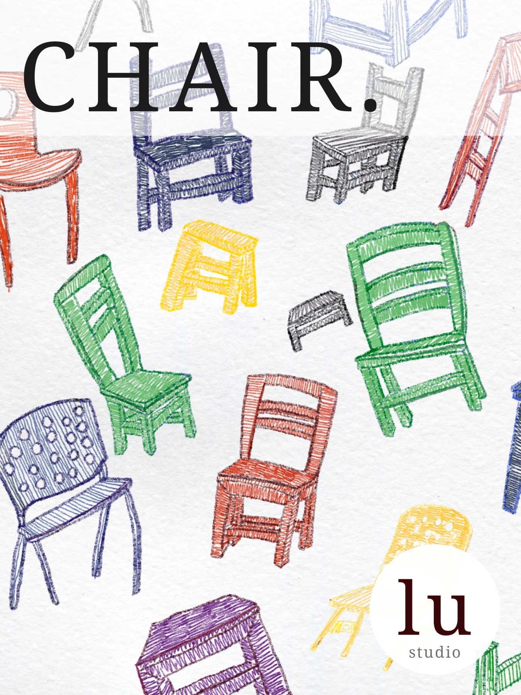
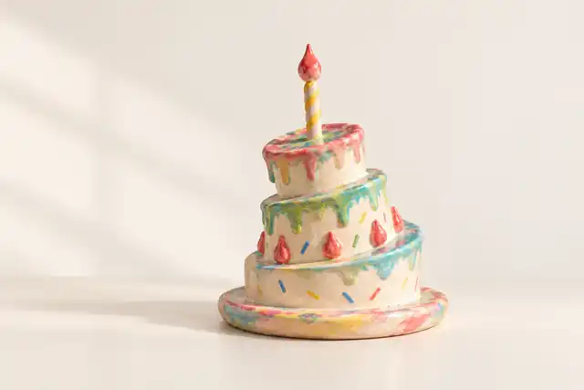
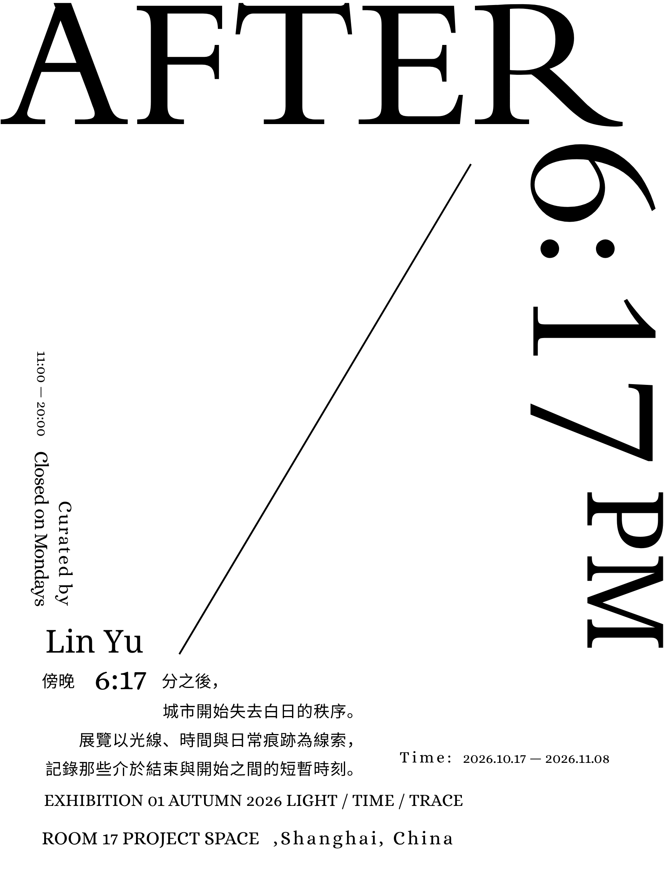
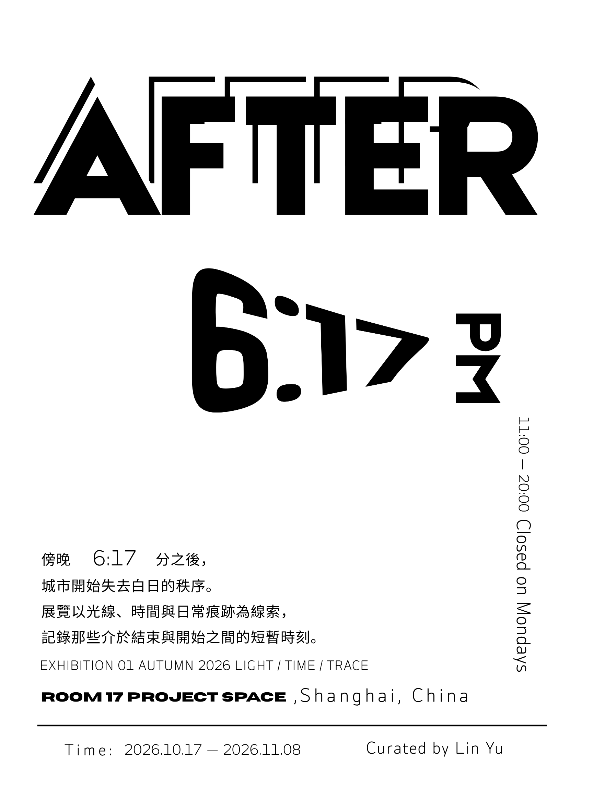
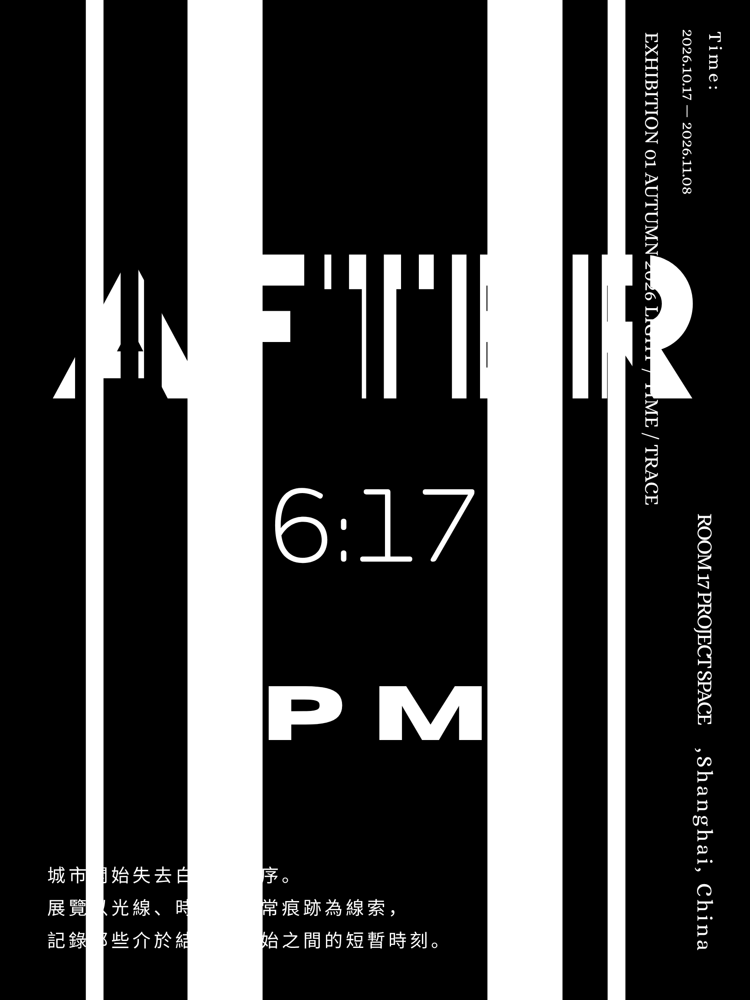

ART / CURATORIAL PRACTICE
从创作，到观看。
王璐，版画与视觉艺术实践者。以个人创作、材料实践和自主策展，探索图像被制作、呈现与阅读的方式。

ONLINE EXHIBITION / CHAIRS
Chairs
以椅子为主视觉的本册系列
把日常的椅子，带入可以随身携带的图像。
作品与线上策展：王璐
主视觉 · 本册系列 · 日常情境
进入 Chairs 系列 →
VISUAL OBJECT STUDY
CAKE OBJECT
形态、材质与场景研究。
围绕比例、颜色、表面符号与呈现方式展开的个人视觉研究。
个人视觉研究 · 2026
进入 CAKE OBJECT →


GRAPHIC DESIGN / CURATORIAL STUDY
AFTER 6:17 PM
当阅读，成为行走。
王璐的三张原创海报，延展为 AI 辅助的自主策展模拟，尚未实施。
查看海报与策展模拟 →作品档案
版画、平面设计、插画与材料实践。
02 / PRACTICE实践与协作
艺术制作、教学支持与独立运营。
03 / ABOUT关于王璐
个人简介、展览收藏与联系。